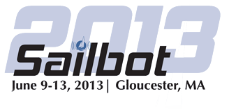

Sailbot 2013
The Sailbot competition is an annual competition between student teams.
We are the only one of the 16 teams competing this year that are entering from outside of the US and Canada. Among the other competing teams are the US Naval Academy and the University of British Columbia.
The competition prides itself on how well rounded it's competitors need to be to succeed. A good robotic sailing team need a variety of key skills varying from computer science, naval architecture, engineering, team working and team management, as well as the sailing experience which gives a key advantage to any team, like ours, that has it.
Sailing robots themselves have a wide variety of applications, which the competition, whether intentional or not, promts inovation into. These include pollution monitoring, marine biology, oceanographic mapping, border surveillance, and in the future (as with robotic cars) even transport.
This year Sailbot is being held in the city of Gloucester, near Boston, Massachusetts, in June 2013.
For the official Sailbot2013 website, click here